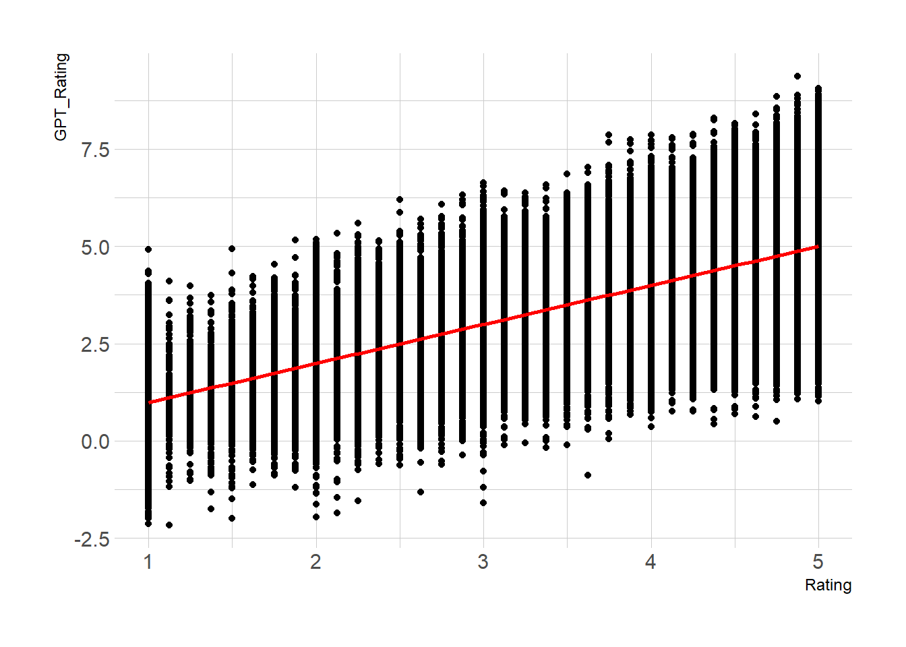
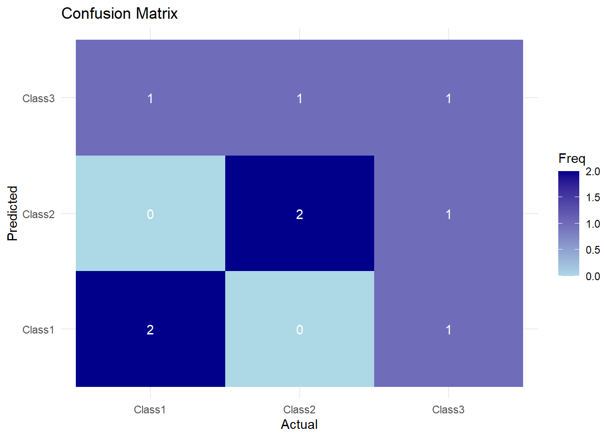

1 + 1[1] 2Consumer Car Reviews from Edmunds.com
Quarto enables you to weave together content and executable code into a finished document. To learn more about Quarto see https://quarto.org.
text analysis has long been a complicated and not always super insightful exercise. not anymore. now it’s vastly more powerful, insightful, and accessible.
When you click the Render button a document will be generated that includes both content and the output of embedded code. You can embed code like this:
1 + 1[1] 2You can add options to executable code like this
[1] 4The echo: false option disables the printing of code (only output is displayed). Does this work?
Does this work?
# American car brands: ford, stellantis (chrysler, dodge, jeep, and ram), GM (Buick, Cadillac, Chevrolet, and GMC)
# Japanese car brands: toyota, honda, mazda, nissan, mitsubishi, suzuki, subaru, infiniti, lexus, acura
# European car brands: bmw, mercedes benz, volkswagen, audi, volvo,
# south korean car brands: kia, hyundai
# Define the path to the subfolder containing the .csv files
subfolder_path <- "data"
# List all .csv files in the subfolder
csv_files <- list.files(path = subfolder_path, pattern = "\\.csv$", full.names = TRUE)
# Initialize an empty list to store the data frames
data_list <- list()
# Use lapply to read all .csv files and store them in a list
# data_list <- lapply(csv_files, read_csv)
# Loop through each file and read it into a data frame
for (file in csv_files) {
# extract the make from filename
# Using gsub to cut "Scraped_Car_Review_" and ".csv"
result <- gsub("data/Scrapped_Car_Reviews_", "", file)
result <- gsub("data/Scrapped_Car_Review_", "", result)
result <- gsub("data/Scraped_Car_Review_", "", result)
result <- gsub("data/Scraped_Car_Review_", "", result)
result <- gsub(".csv", "", result)
# Read the .csv file & add variable for make
data <- read_csv(file, show_col_types = FALSE) |> mutate(make = result)
# Store the data frame in the list
data_list[[file]] <- data
}New names:
New names:
New names:
New names:
New names:
New names:
New names:
New names:
New names:
New names:
New names:
New names:
New names:
New names:
New names:
New names:
New names:
New names:
New names:
New names:
New names:
New names:
New names:
New names:
New names:
New names:
New names:
New names:
• `` -> `...1`df <-bind_rows(data_list)
glimpse(df)Rows: 206,181
Columns: 8
$ ...1 <dbl> 0, 1, 2, 3, 4, 5, 6, 7, 8, 9, 10, 11, 12, 13, 14, 15, 16…
$ Review_Date <chr> "on 10/13/05 15:30 PM (PDT)", "on 07/17/05 21:59 PM (PDT…
$ Author_Name <chr> "roadking", "Mark", "Tom Sheer", "Keven Smith", "VanMan"…
$ Vehicle_Title <chr> "2002 Dodge Ram Cargo Van 1500 3dr Van (3.9L 6cyl 3A)", …
$ Review_Title <chr> "Great delivery vehicle", "Disappointmnet", "Sweet van",…
$ Review <chr> "It's been a great delivery vehicle for my cafe business…
$ Rating <dbl> 4.625, 2.125, 5.000, 4.500, 2.875, 2.250, 3.000, 4.625, …
$ make <chr> "dodge", "dodge", "dodge", "dodge", "dodge", "dodge", "d…# remove leading words & spaces from date variable
df <- df |>
mutate(Review_Date = str_replace_all(Review_Date, "on ", ""),
Review_Date = str_replace_all(Review_Date, "PDT", ""),
Review_Date = str_replace_all(Review_Date, " PST", ""),
Review_Date = str_replace_all(Review_Date, "[()]", ""),
Review_Date = str_trim(Review_Date),
Review_Date = mdy_hm(Review_Date))
glimpse(df)Rows: 206,181
Columns: 8
$ ...1 <dbl> 0, 1, 2, 3, 4, 5, 6, 7, 8, 9, 10, 11, 12, 13, 14, 15, 16…
$ Review_Date <dttm> 2005-10-13 15:30:00, 2005-07-17 21:59:00, 2002-07-16 00…
$ Author_Name <chr> "roadking", "Mark", "Tom Sheer", "Keven Smith", "VanMan"…
$ Vehicle_Title <chr> "2002 Dodge Ram Cargo Van 1500 3dr Van (3.9L 6cyl 3A)", …
$ Review_Title <chr> "Great delivery vehicle", "Disappointmnet", "Sweet van",…
$ Review <chr> "It's been a great delivery vehicle for my cafe business…
$ Rating <dbl> 4.625, 2.125, 5.000, 4.500, 2.875, 2.250, 3.000, 4.625, …
$ make <chr> "dodge", "dodge", "dodge", "dodge", "dodge", "dodge", "d…# add variable for country
df <- df %>%
mutate(country = case_when(
make %in% c("toyota", "honda", "mazda","nissan","mitsubishi","suzuki","subaru","infiniti","lexus","acura") ~ "Japanese",
make %in% c("ford", "chrysler", "dodge", "jeep", "ram", "buick", "cadillac", "chevrolet", "gmc", "lincoln", "mercury") ~ "American",
make %in% c("bmw", "mercedes-benz","volkswagen","audi", "volvo", "porsche", "mini") ~ "European",
make %in% c("kia", "hyundai") ~ "South Korean",
TRUE ~ make # Default value for any unmatched cases
)) |>
rename(index = "...1")
table(df$country)
American European Japanese South Korean
78708 38535 74724 14214 df.bymonth <- df |>
mutate(reviews.month = round_date(Review_Date, "month")) |> # reviews by month-year
#mutate(reviews.month = round_date(Review_Date, "3 months")) |> # reviews by month-year
#filter(Review_Date >= as.POSIXct("2014-01-01")) |>
group_by(country, reviews.month) |>
summarise(
mean.rating = mean(Rating, na.rm=TRUE),
num.reviews = n()
)`summarise()` has grouped output by 'country'. You can override using the
`.groups` argument.glimpse(df.bymonth)Rows: 802
Columns: 4
Groups: country [4]
$ country <chr> "American", "American", "American", "American", "America…
$ reviews.month <dttm> 2002-02-01, 2002-03-01, 2002-04-01, 2002-05-01, 2002-06…
$ mean.rating <dbl> 3.902778, 4.278049, 4.340334, 4.282366, 4.303444, 4.2485…
$ num.reviews <int> 9, 410, 494, 448, 421, 434, 439, 394, 404, 383, 413, 493…p <- ggplot(df.bymonth, aes(x=reviews.month, y=mean.rating, group=country, color=country)) +
#geom_line
geom_smooth()
p`geom_smooth()` using method = 'loess' and formula = 'y ~ x'
View the data:
# A tibble: 10 × 3
make Review_Title Review
<chr> <chr> <chr>
1 chevrolet Cheap reliable transportation "I bought this …
2 cadillac My STS rocks! "I've enjoyed o…
3 cadillac Love my Caddy ! "This is my fou…
4 nissan Disappointed "I changed my 2…
5 toyota The Haggle Was Worth the Car "Looked really …
6 mercedes-benz Mercedes C43 Jet "Love my C43! Y…
7 acura OVERALL PERFORMANCE "OVERALL PERFOR…
8 mazda Love performance, hate the new exterior design "I currently ow…
9 chrysler Loved this car, but hated turning radius "I was just in …
10 chevrolet JUNK "04 impala LS/3…Code the data:
library(ellmer)
chat <- chat_openai(
model = "gpt-4o-mini",
system_prompt = "You are a friendly but terse assistant.",
)
# confirm chat is connected to API
chat$chat("Is R a functional programming language?")Yes, R is a functional programming language. It supports first-class functions,
higher-order functions, and allows functions to be passed as arguments. While
it also supports other programming paradigms, such as procedural and
object-oriented programming, its functional features are a key aspect of the
language.prompt<-paste("Please car review the an owner submitted to Edmunds.com, a popular website for reviewing cars. Review the response carefully and code the following variables:")
response_coded <- type_object(
prompt,
sentiment = type_enum("Extract the sentiment of the review", c("positive", "neutral", "negative")),
gpt_Rating = type_number("Based on this review, how do you think the owner would rate their vehicle? Use a numeric scale from 0 to 5, where 0 is very negative, and 5 is very positive."),
reliability = type_integer("1 if the owner references the vehicle's reliability in their review, 0 otherwise"),
utility = type_integer("1 if the owner references the vehicle's utility features in their review, 0 otherwise"),
driving = type_integer("1 if the owner references the vehicle's driving characteristics in their review, 0 otherwise"),
comfort = type_integer("1 if the owner references the vehicle's comfort in their review, 0 otherwise"),
interior = type_integer("1 if the owner references the vehicle's interior features in their review, 0 otherwise"),
fuel_efficiency= type_integer("1 if the owner references the vehicle's fuel efficiency in their review, 0 otherwise"),
technology = type_integer("1 if the owner references the vehicle's technology features in their review, 0 otherwise")
)
# DEMO STRUCTURED DATA FUNCTION
text<-paste(df[165,"Review"])
text[1] "I traded my 05 Bonneville for the 05 Magnum SXT RWD 3.5L. I am 19 and this is the perfect car- it's definitely a sporty college kid car, and I got mine with under 20k miles for under $10k. What a steal! Gas mileage is not bad. I get 21mpg driving around town but I do a lot of interstate driving and i maintain 25-27mpg. Not better than my Bonneville no, but it certainly gets just as good gas mileage as any other car on the road today. I only wish I had a Magnum R/T. I want the dual chrome exhaust with the Hemi!"chat <- chat_openai()
coded.review <- chat$extract_data(text, type = response_coded)
str(coded.review)List of 9
$ sentiment : chr "positive"
$ gpt_Rating : num 4.5
$ reliability : int 0
$ utility : int 0
$ driving : int 1
$ comfort : int 0
$ interior : int 0
$ fuel_efficiency: int 1
$ technology : int 0# code a subset of responses
df.sub <- df |>
slice_sample(n = 10)
result = NULL
for (i in 1:nrow(df.sub)) {
out <- chat$extract_data(paste(df.sub[i,"Review"]),
type = response_coded)
result<-rbind(result,cbind(df.sub[i,"index"],as.data.frame(out)))
}
glimpse(result) Rows: 10
Columns: 10
$ index <dbl> 3091, 3220, 6, 1087, 12331, 970, 17804, 15, 13616, 110…
$ sentiment <chr> "neutral", "neutral", "neutral", "positive", "positive…
$ gpt_Rating <dbl> 4.0, 3.0, 3.0, 5.0, 5.0, 3.0, 4.0, 4.0, 4.0, 4.5
$ reliability <int> 1, 0, 1, 0, 1, 1, 1, 0, 1, 0
$ utility <int> 0, 1, 1, 0, 0, 1, 1, 1, 1, 0
$ driving <int> 1, 0, 1, 1, 1, 0, 1, 1, 1, 1
$ comfort <int> 0, 0, 0, 1, 0, 0, 0, 1, 1, 0
$ interior <int> 0, 0, 0, 1, 0, 0, 1, 1, 1, 0
$ fuel_efficiency <int> 0, 1, 1, 0, 0, 0, 1, 0, 1, 0
$ technology <int> 0, 0, 0, 1, 0, 0, 1, 0, 0, 0# reliability
# engine power / performance
# build quality
# smooth handling
# reliability and durability
# technology and/or connectivity
# gas mileage / fuel efficiency
# safety
# cargo space
# driver assistance
# comfort features / car noise / ride quality
# niche issues
# electrical problems
# transmission problems
# other
# resale value
# brand loyalty?
#edmunds categories: utility driving comfort interior technologydf$GPT_Rating <- df$Rating + rnorm(length(df$Rating),0,1)
# linear trend + confidence interval
p3 <- ggplot(df, aes(x=Rating, y=GPT_Rating)) +
geom_point() +
geom_smooth(method=lm , color="red", fill="#69b3a2", se=TRUE) +
theme_ipsum()
p3
# confusion matrix approach
# Define the bin breaks and labels
bin_breaks <- c(-Inf, 2.5, 3.5, 5)
bin_labels <- c("Negative", "Neutral", "Positive")
# Use cut() to bin the Rating variable
df <- df %>%
mutate(Rating_cat = cut(Rating, breaks = bin_breaks, labels = bin_labels, include.lowest = TRUE))
# Load necessary library
library(caret)
# Example data: Actual and predicted classes
actual <- factor(c("Class1", "Class2", "Class3", "Class1", "Class2", "Class3", "Class1", "Class2", "Class3"))
predicted <- factor(c("Class1", "Class2", "Class3", "Class1", "Class2", "Class2", "Class3", "Class3", "Class1"))
# Ensure both actual and predicted have the same levels (classes)
levels(actual) <- levels(predicted) <- c("Class1", "Class2", "Class3")
# Generate the confusion matrix
conf_matrix <- confusionMatrix(predicted, actual)
# Print the confusion matrix
print(conf_matrix)Confusion Matrix and Statistics
Reference
Prediction Class1 Class2 Class3
Class1 2 0 1
Class2 0 2 1
Class3 1 1 1
Overall Statistics
Accuracy : 0.5556
95% CI : (0.212, 0.863)
No Information Rate : 0.3333
P-Value [Acc > NIR] : 0.1448
Kappa : 0.3333
Mcnemar's Test P-Value : NA
Statistics by Class:
Class: Class1 Class: Class2 Class: Class3
Sensitivity 0.6667 0.6667 0.3333
Specificity 0.8333 0.8333 0.6667
Pos Pred Value 0.6667 0.6667 0.3333
Neg Pred Value 0.8333 0.8333 0.6667
Prevalence 0.3333 0.3333 0.3333
Detection Rate 0.2222 0.2222 0.1111
Detection Prevalence 0.3333 0.3333 0.3333
Balanced Accuracy 0.7500 0.7500 0.5000# Load necessary library
library(ggplot2)
# Convert confusion matrix to a data frame
conf_matrix_df <- as.data.frame(conf_matrix$table)
# Plot the confusion matrix
ggplot(conf_matrix_df, aes(x = Reference, y = Prediction, fill = Freq)) +
geom_tile() +
geom_text(aes(label = Freq), color = "white") +
scale_fill_gradient(low = "lightblue", high = "darkblue") +
labs(title = "Confusion Matrix",
x = "Actual",
y = "Predicted") +
theme_minimal()
results by American, European, Japanesse, and South Korean automakers